1060G pressure pump electric control
- Path
- Descriptions > 10 ENGINE UNIT > 1060 DIESEL FUEL INJECTION > 1060G pressure pump electric control
- Kind
- system description
- Applies to
- engines: 1.9 JTD 8V; all production periods
- Interactive page
- https://sloeber94.github.io/elrnDB-fMltpl/en/#/2888243
Applies to: engines: 1.9 JTD 8V; all production periods
The main characteristics of the Unijet system are:
- high injection pressure (up to 1350 bar);
- possibility of modulating the injection pressure under all engine working conditions between 150 and 1500 bar;
- introduction of fuel up to 100 mm3/cycle in a range between 100 and 6000 rpm .
- precise injection control, for both injection advance and duration of injection;
- pilot injection, before top dead centre, managed in relation to the engine rpm and load which allows the pressure derivative in the combustion chamber to be reduced, with a reduction in the noise level.
TECHNICAL ADVANTAGES
The advantages of the Unijet system are:
- it improves the formation of the air-fuel mixture;
- the injection pressure may be freely selected from within wide limits;
- the start of fuel injection and the amount of diesel injection can also be freely determined;
- it is more flexible when operating conditions vary, especially under cold conditions;
- ecological and economic combustion.
- requires less engine power for its operation;
- simplified system;
- modular system;
- better performance at lower cost.
The results obtained with the Unijet system are:
- increased torque and power delivered by the engine;
- reduction in fuel consumption;
- reduction in pollutant emissions;
- reduction in total engine noise;
- improvement in the driveability of the vehicle.
OPERATION
The main functions of the system are basically as follows:
- control of the fuel temperature
- control of the engine coolant temperature
- control of the quantity of fuel injected
- control of the idle speed
- fuel cut-off during overrunning
- control of the cylinder balance during idling
- control of irregular operation
- control of exhaust fumes during acceleration
- control of exhaust gas recirculation (E.G.R.)
- control of maximum torque restriction
- control of maximum speed restriction
- control of the heater plugs
- control of engagement of climate control system (where fitted)
- control of auxiliary fuel pump
- control of the position of the cylinders
- control of the main injection advance and operation
- control of the closed loop injection pressure
- control of the electrical balance
- control of the turbocharging pressure
- self diagnosis
- connection with the Fiat CODE control unit (Immobilizer)
INJECTION SYSTEM
The Common Rail system makes it possible to carry out a pre-injection before T.D.C. with the advantage of reducing the derivative of the pressure in the combustion chamber, reducing the value of the combustion noise, typical of direct injection engines.
The control unit controls the quantity of fuel injected, regulating the line pressure and injection times.
The control unit processes the following information to control the quantity of fuel to inject:
- engine rpm
- coolant temperature
- turbocharging pressure
- air temperature
- intake air quantity
- battery voltage
- diesel pressure
- accelerator pedal position.
DIAGRAM OF INPUT/OUTPUT INFORMATION TO/FROM THE CONTROL UNIT
-
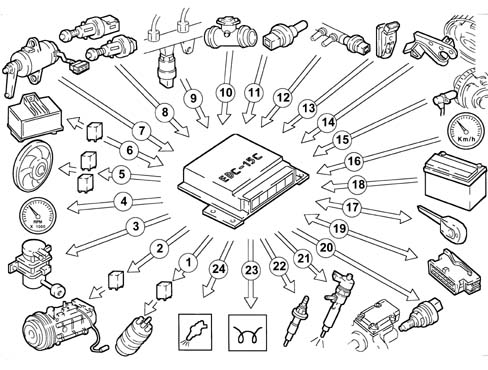
1, Electric fuel pump 2, Air conditioner compressor 3, Modulator for E.G.R. valve 4, Rev counter 5, Electric fans 6, Heater plugs control unit 7, Accelerator pedal potentiometer 8, Clutch/brake pedal switch 9, Fuel pressure sensor 10, Flowmeter 11, Coolant temperature sensor 12, Fuel temperature sensor 13, Excess pressure sensor 14, Timing sensor 15, Rpm sensor 16, Speedometer 17, Fiat CODE 18, Battery 19, Diagnostic socket 20, Pressure regulator 21, Injectors 22, Heater plugs 23, Heater plugs warning light 24, Engine check warning light
SYSTEM OPERATING LOGIC
Self-diagnosis
The control unit's self-test system checks the signals coming from the sensors, comparing them with the permitted limits:
- indication of faults upon start-up
- warning light on for 4 s indicates test stage
- warning light off after 4 secs indicates no faults in components that could affect the values established in emission control regulations
- warning light on after 4 s indicates fault.
- fault indication during operation
- warning light on indicates fault
- warning light off indicates no faults in components that could affect the values established by emission control regulations
- recovery
- the control unit defines as and when required the type of recovery depending on the faulty components
- the recovery parameters are managed by non-faulty components.
Recognition of fiat code
When the control unit receives the ignition 'ON' signal, it dialogues with the Fiat CODE control unit to obtain starting enablement.
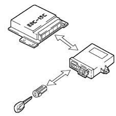
Control of the fuel temperature
When the temperature of the fuel is 110°C, measured by the sensor at the recirculation manifold, the control unit
operates the pressure regulator to reduce the line pressure (it does not modify the injection times).
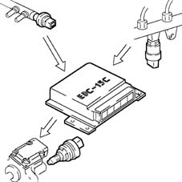
Control of the engine coolant temperature
With the temperature of the engine coolant greater than 105°C, the control unit:
- reduces the quantity of fuel injected (reduces the engine power)
- operates the cooling fans
- lights up the coolant overheating warning light.
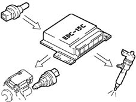
Control of the quantity of fuel injected
On the basis of the signals coming from the sensors and the values in the map, the control unit:
- operates the pressure regulator
- varies the injection time up to 3000 rpm
- varies the 'main' injection time.
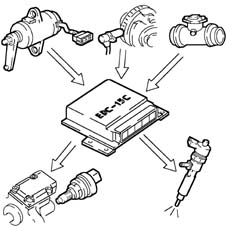
Control of the idle speed
The control unit processes the signals coming from the various sensors and regulates the quantity of fuel injected:
- operates the pressure regulator
- varies the injector injection times.
Within certain limits the speed takes the battery voltage into account.
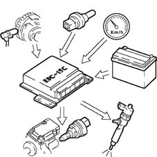
Fuel cut-off during overrunning
When the accelerator pedal is released the following logics are implemented:
- cuts off the supply to the fuel injectors
- it partially reactivates the supply to the injectors before the idle speed is reached
- operates the fuel pressure regulator.
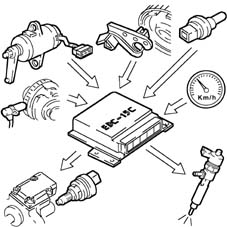
Control of the cylinder balance during idling
On the basis of the signals received from the sensors, the control unit controls the precision of the torque at idle speed:
- varies the quantity of fuel injected in the individual injectors (injection time).
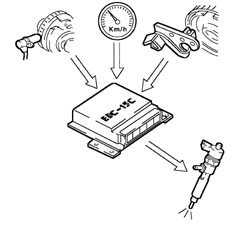
Control of irregular operation
The control unit processes the signals received from the various sensors and determines the quantity of fuel to be injected via:
- the pressure regulator
- the opening time of the injectors.
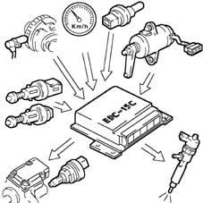
Control of exhaust fumes during acceleration
When there is considerable acceleration, the control unit determines the optimum quantity of fuel to be injected, on the basis of the signals received from the flow meter and engine rpm sensor:
- operates the pressure regulator
- varies the injector injection time.
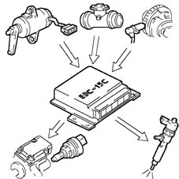
Control of exhaust gas recirculation (e.g.r.)
On the basis of the engine load and signal coming from the accelerator pedal potentiometer, the control unit restricts the amount of air drawn in, implementing the partial intake of exhaust gases.
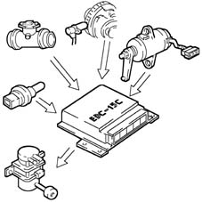
Eobd (european on board diagnosis) system
The implementation of the EOBD function is managed by the engine management control unit which manages the yellow warning light for the engine management system (EOBD) as described below.
The warning light: is activated on request by the engine control unit for about 4 seconds (check) when the ignition key is turned to 'MAR'.
The EOBD system carries out continuous diagnosis of the car's petrol fuel system components relating to emissions and indicates any deterioration of these components by the warning light in the instrument panel coming on.
The aim of the system is:
- keeping the efficiency of the system under control;
- signalling an increase in emissions due to a vehicle malfunction;
- signalling the need to replace deteriorated components.
Control of maximum torque limitation
According to the number of revs, the control unit calculates the following from predefined maps:
- the torque limit
- the permissible fumes (limit).
It compares these minimum values and corrects them with other parameters:
- coolant temperature
- engine rpm
- vehicle speed
it controls the quantity of fuel to be injected (pressure regulator - injectors).
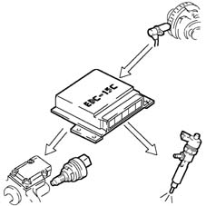
Control of maximum speed limit
According to the number of revs, the control unit implements two intervention strategies:
- at 5000 rpm it cuts off the fuel, reducing the line pressure
- above 5400 rpm it deactivates the auxiliary pump and the injectors.
Control of heater plugs
The control unit, during the following stages:
- starting
- post-starting
the engine management control unit times the operation of the heater plugs control unit according to the engine temperature.
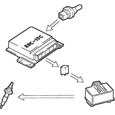
Control of air conditioning system activation
The control unit operates the air conditioning compressor:
- switching it on/off when the relevant switch is pressed
- switching it off momentarily (for around 6 secs) if there is substantial acceleration or a request for maximum power.
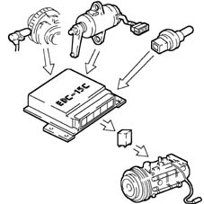
Control of auxiliary electric fuel pump
Irrespective of the engine speed, the control unit:
- supplies the auxiliary fuel pump with the ignition key in the ON position
- excludes the auxiliary pump supply if the engine is not started up within a few seconds.
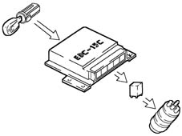
Control of cylinder position
During each revolution of the engine, the control unit recognizes which cylinder is in the explosion stroke and operates the injection sequence at the appropriate cylinder.
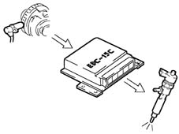
Control of main and operated injection advance
On the basis of the signals coming from the various sensors, including the absolute pressure sensor in the actual control unit, the control unit determines the optimum injection point according to an internal map.
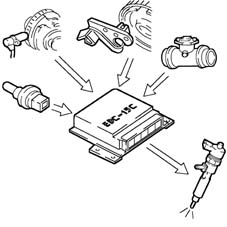
Control of closed loop injection pressure
On the basis of the engine load, determined by processing the signals coming from the various sensors, the control unit operates the regulator to obtain optimum line pressure.
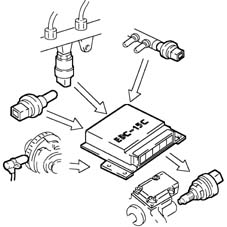
Control of electrical balance
According to the battery voltage, the control unit varies the idle speed:
- increases the injector injection time
- regulates the line pressure.
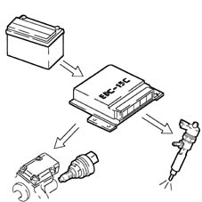
Control of turbocharging pressure
At the various engine operating speeds, the control unit processes the signal coming from the turbocharging sensor and determines the quantity of fuel to be injected:
- operates the pressure regulator
- varies the injection time.
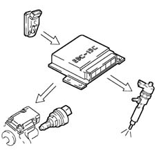
Recovery
The faulty components are shown in bold whilst the operation of the control unit is described in light type
Engine rpm sensor: Interruption in the fuel supply
Engine timing sensor: Engine starting not possible
Fuel pressure sensor: Operation in open-loop limiting fuel pressure - a pressure value of 0 bar is assumed
Supercharging pressure sensor: Interruption of supercharging operation A pressure of 0.9 bar is assumed
Flow meter: EGR operation disabled
Temperature sensor: With the engine running a fluid value of 79.96° C is assumed (cooling fan activated) = in other conditions the value is 0° C
Fuel temperature sensor: A value of 79.96 °C is assumed.
Air temperature sensor: A value of 40.00 °C is assumed
Atmospheric pressure sensor: A value derived from the turbocharging pressure is used. With simultaneous malfunction on the turbocharging sensor, a value of 0.9 bar is assumed.
Pedal potentiometer: An accelerator opening of 0% is assumed. The air conditioning compressor coupling is disabled and switched off
Pedal potentiometer: A 0% opening value is assumed for accelerator no. 2. (redundant) The disengagement is disabled
Faulty component: Air conditioning compressor coupling control unit action
Pre-heater relay: 10 seconds after initialization, the heater plugs warning light starts a 30 second flashing cycle.
EDC-15C COMMON RAIL INJECTION CONTROL UNIT
Construction features
It is fitted in the passenger compartment on the passenger side panel. The control unit is the 'flash EPROM' type, i.e. reprogrammable from the outside without intervening on the hardware.
The injection control unit integrates the absolute pressure sensor.
Pin-out
-.
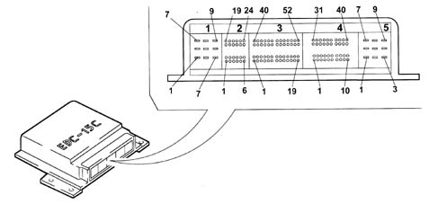
1-01, (+) Battery from the main relay (10 A) 1-02, N.C. 1-03, N.C. 1-04, (-) Battery 1-05, (-) Battery 1-06, (-) Battery 1-07, (+) Battery from the main relay 1-08, (+) Battery from the main relay 1-09, N.C. 2-01, Heater plugs timer signal 2-02, Clutch pedal switch 2-03, Air conditioner engagement request 2-04, N.C. 2-05, N.C. 2-06, N.C. 2-07, N.C. 2-08, Brake pedal switch 2-09, N.C. 2-10, N.C. 2-11, N.C. 2-12, N.C. 2-13, Supply controlled by the ignition 2-14, N.C. 2-15, N.C. 2-16, N.C. 2-17, N.C. 2-18, N.C. 2-19, N.C. 2-20, N.C. 2-21, N.C. 2-22, N.C. 2-23, Request to engage 1st fan speed 2-24, N.C. 3-01, Fuel temperature sensor earth 3-02, N.C. 3-03, N.C. 3-04, N.C. 3-05, Supply for sensor 1 - accelerator pedal 3-06, N.C. 3-07, N.C. 3-08, Earth for sensor 2 - accelerator pedal 3-09, Signal for sensor 2 - accelerator pedal 3-10, Signal for sensor 1 - accelerator pedal 3-11, N.C. 3-12, N.C. 3-13, Immobilizer 3-14, N.C. 3-15, N.C. 3-16, N.C. 3-17, N.C. 3-18, N.C. 3-19, N.C. 3-20, Enablement from 4 stage pressure switch 3-21, Supply for sensor 2 - accelerator pedal 3-22, N.C. 3-23, Earth for sensor 1 - accelerator pedal 3-24, Fuel temperature sensor signal 3-25, N.C. 3-26, Vehicle speed signal 3-27, N.C. 3-28, Diagnostic connection (line K) 3-29, N.C. 3-30, Electric fuel pump supply 3-31, N.C. 3-32, N.C. 3-33, N.C. 3-34 N.C. 3-35, N.C. 3-36, N.C. 3-37, Supply for E.G.R. modulating valve 3-38, Operation of heater plugs timer (+) 3-39, N.C. 3-40, Rpm sensor signal 3-41, N.C. 3-42, N.C. 3-43, Heater plugs warning light 3-44, N.C. 3-45, Request to engage 2nd fan speed 3-46, Main relay 3-47, N.C. 3-48, Injection failure warning light 3-49, Water temperature warning light 3-50, E.G.R. actuator 3-51, Operation of heater plugs timer (-) 3-52, Electric fuel pump 4-01, Flow meter supply 4-02, Rpm sensor earth 4-03, Rpm sensor signal 4-04, Flow meter earth 4-05, N.C. 4-06, Supercharging pressure sensor signal 4-07, Excess pressure sensor earth 4-08, Excess pressure sensor supply 4-09, N.C. 4-10, N.C. 4-11, Flow meter supply 4-12, Rpm sensor supply 4-13, Fuel pressure sensor supply (5 V) 4-14, Flow meter signal 4-15, Quadrinary on 4-16, N.C. 4-17, Rpm sensor shielding 4-18, N.C. 4-19, N.C. 4-20, N.C. 4-21, Fuel pressure sensor 4-22, N.C. 4-23, Air temperature sensor signal 4-24, Fuel pressure sensor signal 4-25, N.C. 4-26, Rpm sensor signal 4-27, Fuel temperature sensor earth 4-28, N.C. 4-29, N.C. 4-30, N.C. 4-31, Pressure regulator 4-32, Air conditioning system relay 4-33, N.C. 4-34, Fuel pressure sensor earth 4-35, N.C. 4-36, Fuel temperature sensor signal 4-37, N.C. 4-38, N.C. 4-39, N.C. 4-40, N.C. 5-01, N.C. 5-02, Supply for injector for cylinders 1 and 4 5-03, Operating signal for injector for cyl. 4 5-04, Supply for injector for cylinders 2 and 3 5-05, Operating signal for injector for cylinder 3 5-06, N.C. 5-06, N.C. 5-07, Operating signal for injector for cyl. 2 5-08, N.C. 5-09, Operating signal for injector for cyl. 1
ENGINE RPM SENSOR
Construction features
The function of this sensor is to detect the engine's speed of rotation and angular position.
It is a transducer with variable magnetic reluctance (pick-up) mounted on the cylinder block, and it faces the SMOT 60-2 teeth phonic wheel attached to the flywheel.
Composition
-
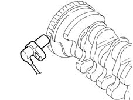
-
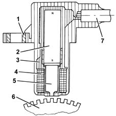
1, Brass bush 2, Permanent magnet 3, Plastic sensor casing 4, Coil winding 5, Polar core 6, Toothed or phonic wheel 7, Coaxial two-wire cable or electrical connection
Operation
As the phonic wheel teeth go past, the magnetic flow created by the magnet (2) undergoes fluctuations due to the change in gap. These fluctuations induce an electromotive force in the winding (2), at the ends of which there is a voltage which alternates between positive (tooth opposite sensor) and negative (gap opposite sensor). The peak value of the output voltage from the sensor, provided other factors remain the same, depends on the distance between the sensor and tooth (gap). The phonic wheel comprises sixty teeth, two of which have been removed to create a reference: the pitch of the wheel thus corresonds to an angle of 6° (360° divided by 60 teeth). The synchronization point is recognized at the end of the first tooth after the space created by the two missing teeth: when this passes under the sensor, the pair of pistons 1-4 of the engine are at 114 before TDC. The distance (gap) for obtaining correct signals, between the end of the sensor and the flywheel, should be between 0.8 and 1.5 mm. This gap is not adjustable, so if a value outside the tolerance range is measured, check the condition of the sensor and the flywheel.
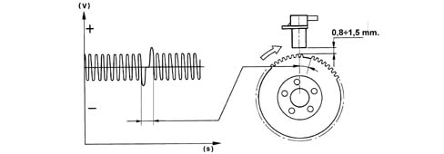
TIMING SENSOR
Construction features
The function of the sensor is to measure the engine's timing during synchronization.
It is a Hall-effect sensor, mounted on the cylinder head and facing the welded ring (on which the window is located) on the pulley fitted on the camshaft.
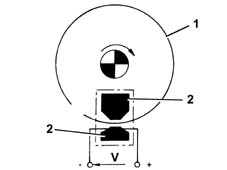
1, Pulley ring 2, Magnetic material
Operation
A semiconducting layer, through which current passes, immersed in a perpendicular magnetic field (force lines perpendicular to the current direction), generates at its ends a difference in potential known as Hall voltage.
If the intensity of the current remains constant, the voltage generated only depends on the intensity of the magnetic field; the intensity of the field simply has to vary periodically to produce a modulated electrical signal, whose frequency is proportional to the speed with which it changes magnetic field.
To obtain this change, a metal ring (the inside of the pulley) with a gap passes through the sensor.
As it moves, the metal part of the ring covers the sensor, blocking the magnetic field, resulting in a low output signal; viceversa, level with the gap and so when the magnetic field is present, the sensor generate a high signal.
Consequently the high signal alternates with the low signal every two engine revolutions, to be precise when cylinder no. 1 is 58° before TDC.
This signal, together with the rpm and TDC signal, allows the control unit to recognize the cylinders and determine the injection point.
ACCELERATOR PEDAL POTENTIOMETER
Construction features
The sensor consists of a casing (1), fixed to the pedals by a flange, which contains a shaft (2), in an axial position, connected to the two potentiometers (3): one main and one safety.
There is a coil spring on the shaft which guarantees the correct resistance to the pressure whilst a second spring ensures the return on release.
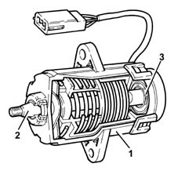
The characteristic angles of the potentiometer are: - P: 0° - minimum - P1: 0°-70° operating range - P2: 88° mechanical stop
-
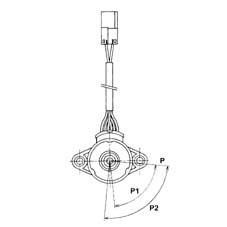
-
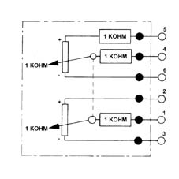
Operation
The position of the accelerator pedal is transformed into an electrical voltage signal and is sent to the fuel injection control unit by the potentiometer connected to the accelerator pedal.
The accelerator pedal position signal is processed together with the information relating to the rpm, to obtain the fuel injection times and relevant pressure.
AIR FLOW METER
Construction features
The air flow meter measures maximum air flow taken in from the surroundings; this flow rate is used to control the EGR and to limit exhaust emissions during transient stages.
It is a hot-film meter, mounted on the inlet duct downstream of the air cleaner and upstream of the compressor.
Diameter of passage section: 50 mm.
The air temperature sensor is built in.
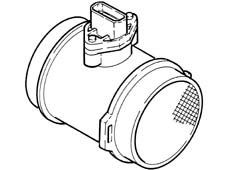
Composition
-
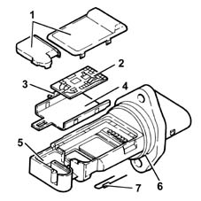
1, Covers 2, Electronic card 3, Sensor 4, Support plate 5, Support 6, O-ring 7, Temperature sensor
Operation
The operating principle is based on a heated diaphragm located in a measuring duct through which the intake air entering the engine flows.
The hot film diaphragm is kept at a constant temperature (about 120°C above the incoming air temperature) by the heating resistor.
The air mass passing through the measuring duct tends to draw heat from the diaphragm, so to keep the latter at a constant temperature, some current must flow through the resistor.
This current is measured by a suitable Wheatstone bridge.
The current is therefore proportional to the mass of flowing air.
The flow meter directly measures the air mass (not volume), thus eliminating problems of temperature, altitude, pressure, etc.
FUEL PRESSURE SENSOR
Construction features
This measures fuel pressure in the rail to determine injection pressure; the injection pressure value is used as feedback for closed-loop control of the pressure and to determine the duration of the electrical command (ET) for injection.
Operation
It is fitted in the centre of the 'rail' fuel distribution manifold and has the task of supplying the injection control unit with a 'feedback' signal for:
- regulating injection pressure
- regulating injection duration.
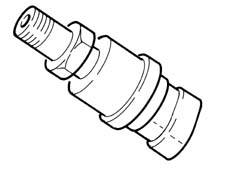
ATMOSPHERIC PRESSURE SENSOR
Construction features
It measures the atmospheric pressure in order to correct the measured air flow rate and the reference air flow rate for control of the EGR.
Integrated in the fuel injection control unit (ECU).
ENGINE COOLANT TEMPERATURE SENSOR
Construction features
This measures the coolant temperature in order to give the control unit an indication of the engine's temperature status.
It is an NTC sensor, whose active part is a resistor with negative coefficient, produced through sintering; the nominal resistance is 2.5 kO ± 6% at 20 °C, 0,186 kO ± 2% at 100 °C.
It is mounted on the thermostat.
Although the sensor specifications are not linear, they are considered as such; the temperature read by the control unit differs in relation to the actual figure.
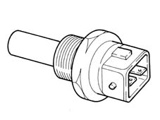
-
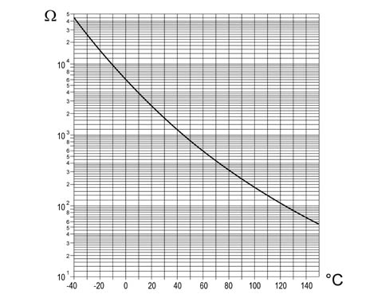
Composition
-
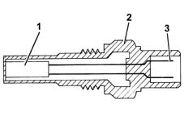
1, NTC resistor 2, Sensor body 3, Supply connector
Operation
The sensor consists of a brass casing which protects the actual resistive element, which consists of an NTC thermistor (Negative Temperature Coefficient, whose electrical resistance decreases as the temperature increases).
The reference voltage is 5 Volt. As the input circuit into the control unit is designed as a voltage divider, this voltage is divided between a resistor located in the control unit and the sensor's NTC resistor. The control unit is thus able to assess the changes in the sensor's resistance via the changes in voltage, and thus obtain the temperature information.
FUEL TEMPERATURE SENSOR
Construction features
This measures the fuel temperature, to give the control unit an indication of the temperature status of the diesel.
It is an NTC sensor, whose active part is a resistor with negative coefficient, produced through sintering; the nominal resistance is 0.186 kO ± 2% at 100 °C, 2.5 kO ± 6% at 20 °C.
It is mounted on the fuel return manifold.
Although the sensor specifications are not linear, they are considered as such; the temperature read by the control unit differs in relation to the actual figure.
Composition
-
1, NTC resistor 2, Sensor body 3, Supply connector
Operation
Refer to the 'Engine coolant temperature sensor'.
INTAKE AIR TEMPERATURE SENSOR
Construction features
It measures the temperature of the intake air, so as to correct the measured air flow rate and reference air flow rate for controlling the EGR.
It is an NTC sensor, whose active part is a resistor with negative coefficient.
The sensor is positioned in the ECU.
Nominal resistance at 25 °C2.00 kO ± 5%
Temperature (°C) | min | Resistance (kW) nom | max |
|---|---|---|---|
-40 | 35.140 | 39.260 | 43.760 |
-30 | 20.770 | 22.960 | 25.310 |
-20 | 12.660 | 13.850 | 15.120 |
-10 | 7.943 | 8.609 | 9.307 |
0 | 5.119 | 5.499 | 5.892 |
+10 | 3.384 | 3.604 | 3.829 |
+20 | 2.290 | 2.420 | 2.551 |
+30 | 1.573 | 1.662 | 1.752 |
+40 | 1.096 | 1.166 | 1.238 |
+50 | 0.779 | 0.835 | 0.892 |
+60 | 0.565 | 0.609 | 0.654 |
+70 | 0.416 | 0.452 | 0.488 |
+80 | 0.312 | 0.340 | 0.370 |
+90 | 0.238 | 0.261 | 0.285 |
+100 | 0.184 | 0.202 | 0.222 |
+110 | 0.144 | 0.159 | 0.176 |
+120 | 0.114 | 0.127 | 0.141 |
+130 | 0.091 | 0.102 | 0.114 |
TURBOCHARGING PRESSURE SENSOR
Construction features
This measures the pressure in the inlet manifold.
It is mounted on the inlet manifold chamber.
Pin-out connector detail
-
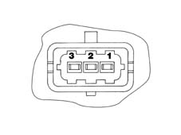
1, 5V (from ECU) 2, Earth 3, Output signal
Operation
This is fitted in the centre of the intake chamber; the signal sent to the injection control unit allows the ECU to:
- regulate injection pressure
- regulate injection duration.
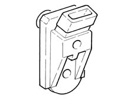
PRE-HEATING ELECTRONIC CONTROL UNIT
Composition
The heater plugs are controlled by the heater plug control unit, under the direct control of the fuel injection control unit.
Inside the heater plug control unit, there is an 'intelligent' relay which sends a feedback response to the fuel injection control unit, which is thus informed of a possible fault in the heater plug control unit or short circuit to earth of the heater plugs.
The figure shows the connectors at the base of the heater plug control unit and the pin connections.
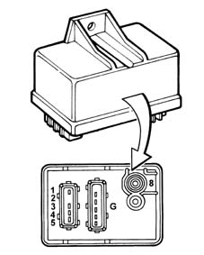
1, Earth 2, Not connected 3, Fuel injection control unit (pin 3-38) 4, Fuel injection control unit (pin 3-51) 5, Fuel injection control unit (pin 2-1) 8, Battery positive (+30)
G, Heater plugs
BRAKE PEDAL SWITCH
There is a switch on the brake pedal which operates the vehicle brake lights; this sends a signal to pin 2-8 of the injection control unit.
The 'brake pedal pressed' signal is used by the control unit to:
- perceive that there is a deceleration situation;
- check the plausibility of the signal coming from the accelerator potentiometer.
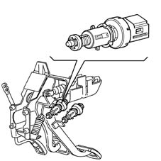
CLUTCH PEDAL SWITCH
On the clutch pedal, there is a switch (1) connected to pin 2-2 of the fuel injection control unit. The 'clutch pedal operated' signal is used by the fuel injection control unit to distinguish the gear engaged and gear change conditions.
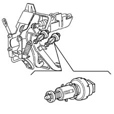